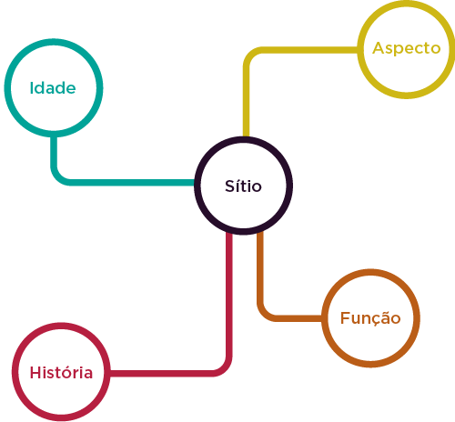
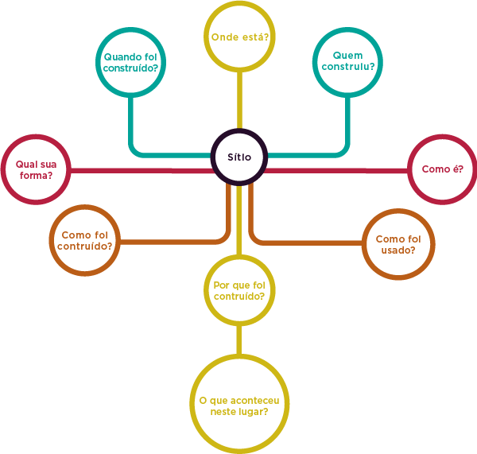

2.2 Os Monumentos e Centros Históricos
Já falamos um pouco sobre como utilizar os monumentos e centros históricos como instrumentos importantes para a aplicação da educação patrimonial. Entretanto, é importante destacar que o meio ambiente histórico é o espaço criado e transformado pela atividade humana, ao longo do tempo e da história. Pode ser um pequeno núcleo habitacional, uma cidade, uma área rural, cortada por caminhos, pontes e plantações. Até mesmo uma paisagem natural, rios e florestas, zonas de alagados ou desertos já sofreram, em algum momento no tempo, o impacto da ação humana (HORTA, 2006, p. 14).
Horta ressalta que o meio ambiente histórico é dinâmico, e continua a mudar no presente e lembra que o conceito de mudança e continuidade é essencial para a compreensão do Patrimônio Cultural, em todos os seus aspectos, e deve ser considerado como um dos conceitos básicos a serem trabalhados no processo da Educação Patrimonial.
Segundo a autora, um exercício que pode ajudar a compreensão deste conceito é pesquisar e documentar as mudanças ocorridas no espaço da escola, ou da casa do aluno, ao longo dos últimos anos, e observar as mudanças ocorridas na sua rua, ou no bairro. Os jornais e revistas são excelentes fontes para esse estudo.
Qual a melhor forma de se trabalhar o meio ambiente histórico com crianças? Horta destaca que para as crianças, com um tempo de vida mais recente e menor que o dos adultos, quase tudo que as rodeia é produto de um passado distante, "do tempo da vovó". A própria casa, a família ou a escola, podem ser materiais úteis para iniciar a compreensão da mudança e da continuidade. As estruturas remanescentes do passado são encontradas em diferentes estados de preservação:
- intactas: escolas, casas, igrejas, prédios públicos, teatros, museus, parques, etc.
- incompletas: não mais usadas por terem sido danificadas pela atividade humana, ou pela ação do tempo, como a chuva, o vento, o mofo, a ferrugem, transformando-se em ruínas (normalmente correspondem à noção mais comum de monumento histórico ou prédio antigo, atraindo o interesse turístico).
- enterradas: estruturas desaparecidas por abandono de uso e pela própria decadência dos materiais (madeira, barro, por exemplo) menos resistentes à ação do tempo. A mudança nas atividades da área provocou o seu desaparecimento sob novas camadas de solo (estes sítios são descobertos e estudados pelos arqueólogos, a partir de alguns vestígios encontrados no solo).
Ao estudar um local, monumento ou sítio histórico, e a interação entre a atividade humana e a paisagem, pode-se usar um conjunto estruturado de perguntas, como ponto de partida para que os alunos proponham suas próprias questões: a questão fundamental: Como é este lugar hoje/ Como era este lugar no passado? – é o ponto de partida para a coleta de dados, o trabalho de campo, as observações orientadas e as diferentes atividades. A partir dessa pergunta, que já implica um exercício mental de observação, comparação e dedução, é possível observar, entre outros aspectos:
- Onde ele está situado?
- Como ele se insere na paisagem natural?
- Quantas estruturas existiam ali?
- De que eram feitas? Para que serviam?
- Quantas pessoas viviam ali?
As questões básicas de abordagem podem ser assim estruturadas:

Estes elementos de análise podem ser aprofundados em diferentes pontos:

As atividades resultantes desse questionamento implicam o exercício de diferentes habilidades, tais como: a observação, o registro verbal, gráfico, matemático, a análise, a dedução, a comparação, a síntese e a apresentação dos resultados, em diferentes formas.
O uso e a compreensão de mapas, plantas, fotografias aéreas, fotos antigas e recentes, documentos originais, arquivos, bibliografia são outras habilidades envolvidas na exploração orientada de um sítio ou monumento histórico.
O essencial nesse processo é fazer as questões adequadas, levantar problemas, discutir os resultados e verificar as conclusões mais apropriadas, isto é, as mais sensíveis e possíveis.
Respostas corretas são raramente possíveis em sítios históricos, pois não podemos captar as ideias dos habitantes originais, a não ser por fontes secundárias (documentos, diários, cartas, etc.). É importante que os alunos percebam isto, e que suas respostas sejam avaliadas pela maneira em que se apoiam na evidência disponível. Neste processo ativo de descoberta da evidência cultural, é importante que os professores não forneçam de antemão as informações disponíveis nos livros ou arquivos, mas que levem os alunos a propor as questões pertinentes e a buscar as “chaves” para o descobrimento daquele local.
De volta à sala de aula é possível analisar os dados coletados no local, reformulando os resultados a partir de pesquisas e discussões posteriores e apresentando as conclusões de forma coletiva, com painéis, desenhos, mapas, gráficos, cronologias, exposições de objetos e fotos, maquetes, etc.
Horta enumera uma série de possibilidades quando se adota a metodologia da educação patrimonial dentro e fora das escolas. Para alcançar a multiplicação das ideias e conceitos propostos neste campo da Educação baseada no Patrimônio Cultural é importante que se faça um treinamento com os agentes que irão desenvolver este trabalho nas escolas, nas associações de bairros, ou em qualquer espaço ou grupo social que se pretenda sensibilizar.
Este treinamento pode ser feito através de Oficinas de Educação Patrimonial, que levarão os participantes a experimentarem diretamente a metodologia de trabalho proposta, podendo assim avaliar a sua eficiência e potencialidade. Ao iniciarmos nossas atividades, recorreremos a alguns dos autores que nos serviram de referência para a elaboração deste texto base.
Reafirmo que os lugares e suportes da memória (museus, monumentos históricos, arquivos, bibliotecas, sítios históricos, vestígios arqueológicos, etc.) são instrumentos que devem ser utilizados no processo educativo, a fim de desenvolver a sensibilidade e a consciência dos estudantes e dos cidadãos para a importância da preservação desses bens culturais.
Para finalizar, me reporto às considerações de Fernandes (2008), quando afirma que educação patrimonial nada mais é do que uma proposta interdisciplinar de ensino voltada para questões atinentes ao patrimônio cultural. Compreende desde a inclusão, nos currículos escolares de todos os níveis de ensino, de temáticas ou de conteúdos programáticos que versem sobre o conhecimento e a conservação do patrimônio histórico, até a realização de cursos de aperfeiçoamento e extensão para os educadores e a comunidade em geral. Dessa forma seria possível lhes propiciar informações acerca do acervo cultural, de forma a habilitá-los a despertar, nos estudantes e na sociedade, o senso de preservação da memória histórica e o consequente interesse pelo tema.
Tenho certeza de que faremos um excelente trabalho. Bom curso a todos.